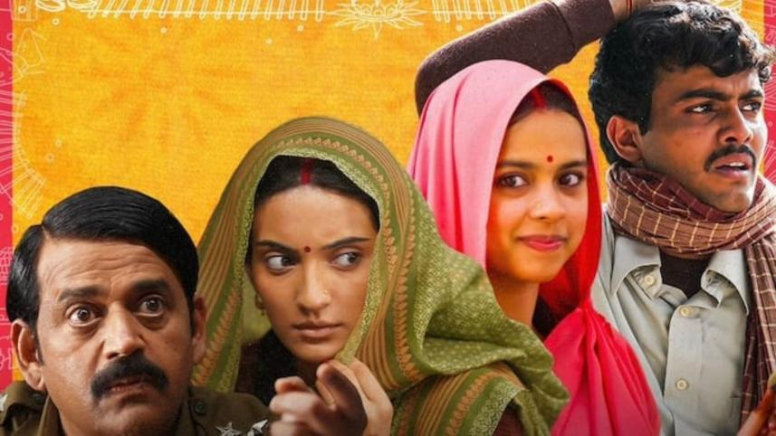

"Sometimes you have to get lost to find yourself."
Set in 2001 in rural India, Laapataa Ladies is a delightful social satire that begins when two young brides, Phool and Jaya, are accidentally swapped on a crowded passenger train due to their identical veils. One bride ends up in a strange village with a bewildered groom, while the other is left stranded at a railway station. As the two women navigate their new environments, the film explores themes of independence, sisterhood, and the absurdity of restrictive social norms with heart and humor.